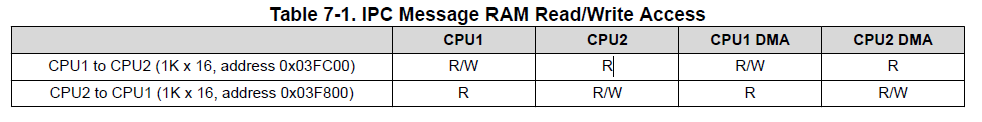

TI_DSP_TMS320F28377D_IPC
基本架构

功能组成
Message RAMs
有两个 2KByte 的消息RAM，
分别为由CPU1 -> CPU2 和 CPU2 -> CPU1。
具体控制情况如下：

对Message RAM进行读写不会触发远程CPU的任何事件。
IPC 标志和中断
每个通信方向有 32 个IPC事件信号。
- CPUx 可以通过写入
IPCSET寄存器 32 位中的任意一位来引发 IPC 事件。
这将设置CPUx IPCFLG寄存器和CPUy IPCSTS寄存器中的相应位。
- CPUy 可以通过设置
IPCACK寄存器中的相应位来发出响应事件的信号。
这将清除CPUx IPCFLG寄存器和CPUy IPCSTS寄存器中的相应位。
- 如果 CPUx 需要取消事件，可设置
IPCCLR寄存器中的相应位。
这与 CPUy 写入IPCACK的效果相同。
- 标志 0-3（使用
IPCSET[3:0]设置）向远程 CPU 发射中断。
远程 CPU 必须正确配置 ePIE 模块才能接收 IPC 中断。
标志 4-31（使用IPCSET[31:4]设置）不产生中断。
可以同时设置、确认和清除多个标志。
IPC命令寄存器
每个 CPU 都有 8 个专用寄存器，
其中 4 个用于发送信息，4 个用于接收信息。
寄存器名称的含义是为了表示支持简单的命令/响应协议，但也可用于任何目的。
只有读/写权限由硬件决定，数据格式完全由软件定义（不超过32 bit）。
在发送信息时，每个 CPU 都有三个可写寄存器和一个只读寄存器。
这些寄存器在对向 CPU 上可作为三个只读寄存器和一个可写寄存器访问。

具体的，
-
CPUx 向
IPCSENDCOM、IPCSENDADDR和IPCSENDDATA寄存器写入数据。
CPUy 通过IPCRECVCOM、IPCRECVADDR和IPCRECVDATA寄存器接收这些数据。
-
CPUy 可通过写入其
IPCLOCALREPLY寄存器做出响应。
CPUx 在自己的IPCREMOTEREPLY寄存器中接收该数据。
- 还有一对类似命令的寄存器，
用于启动时的 IPC 或其他任何方便的用途:IPCBOOTMODE和IPCBOOTSTS。
两个 CPU 都能读取这些寄存器。
CPUx 只能写入IPCBOOTMODE，CPUy 只能写入IPCBOOTSTS。
自由运行计数器
设备内有一个 64 位自由运行计数器，
可用于对处理器之间的 IPC 事件进行时间标记。
计数器的时钟由 PLLSYSCLK 提供，并由 SYSRSn 复位。
计数器由两个 32 位寄存器 IPCCOUNTERH 和 IPCCOUNTERL 实现。
读取 IPCCOUNTERL 时，将保存 IPCCOUNTERH 的值。
随后对 IPCCOUNTERH 的读取将返回保存的值。
因此，用户必须始终先读取 IPCCOUNTERL，然后再读取 IPCCOUNTERH。
这种设计可以防止在读取两个寄存器之间出现因 IPCCOUNTERL 溢出而导致的竞争情况。
只有在所有 CPU 上暂停仿真（调试器触及断点）时，自由运行的计数器才会停止。
如果任何内核正在执行，计数器就会运行。
关于应用
实际应用中，除非期望CPU1驱使CPU2触发中断，才会用到这些IPC寄存器，
否则一般直接使用Message RAM进行信息传递更直观，并且提高可移植性。
Message RAM的地址如下：
CPU2TOCPU1RAM : origin = 0x03F800, length = 0x000400
CPU1TOCPU2RAM : origin = 0x03FC00, length = 0x000400
在sysconfig中，IPC模块无太大意义。